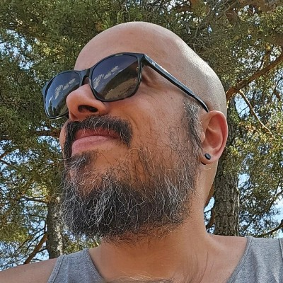
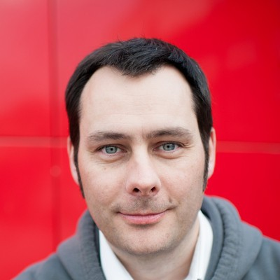

Crédibilité
Le sérieux du projet est dans les équipes.
Plateforme, méthode, livraison

William Le Ferrand
Fondateur
Chief Transformation Officer d'un groupe aéronautique (SOGECLAIR, 157 M€), où il a déployé une ontologie d'entreprise. 10+ ans d'ingénierie logicielle dans la Silicon Valley (Sumo Logic, LogicHub, Lantern YC).
Fondé en 2016. Logiciels open source DeepDetect, JoliGEN, Wheatley, Colette. ~100 projets IA livrés en production — Airbus, Dassault, SNCF, CNES.
CEO & fondateur
Emmanuel Benazera
Docteur en IA · ex-NASA, CNRS, CNES · créateur de DeepDetect
VP AI Services
Hayat Cheballah
Docteure maths & informatique · ex-recherche cryptographie
Chercheur
Guillaume Infantes
Docteur · 10 ans à l'ONERA · apprentissage par renforcement

Ingénieur R&D senior
Luiz de Jesus
Doctorant en IA · mentor ANITI · ex-OVHcloud
AI Applications Developer
Antoine Jacquet
Top 3 mondial CodinGame · contributeur noyau Linux
Ingénieur R&D — ML
Ru Wang
Docteur en physique · deep learning, graphes de connaissance

Business Development
Frédéric Jourdan
Cofondateur Snootlab (IoT open source) · cybersécurité
Hypsis cartographie les processus. Jolibrain apporte la solution, sur mesure. Une application Hypsis, avec Jolibrain inside — deux maisons d'ingénierie françaises, zéro dépendance à un cloud étranger.